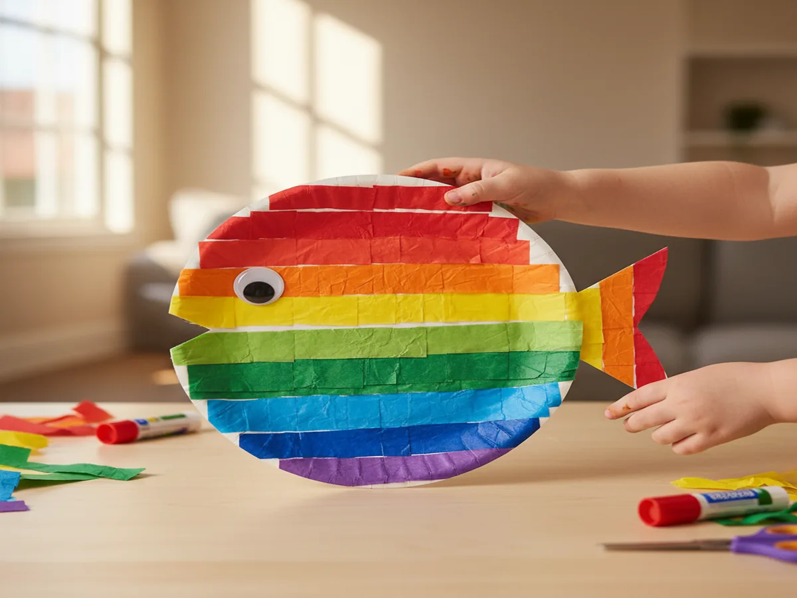
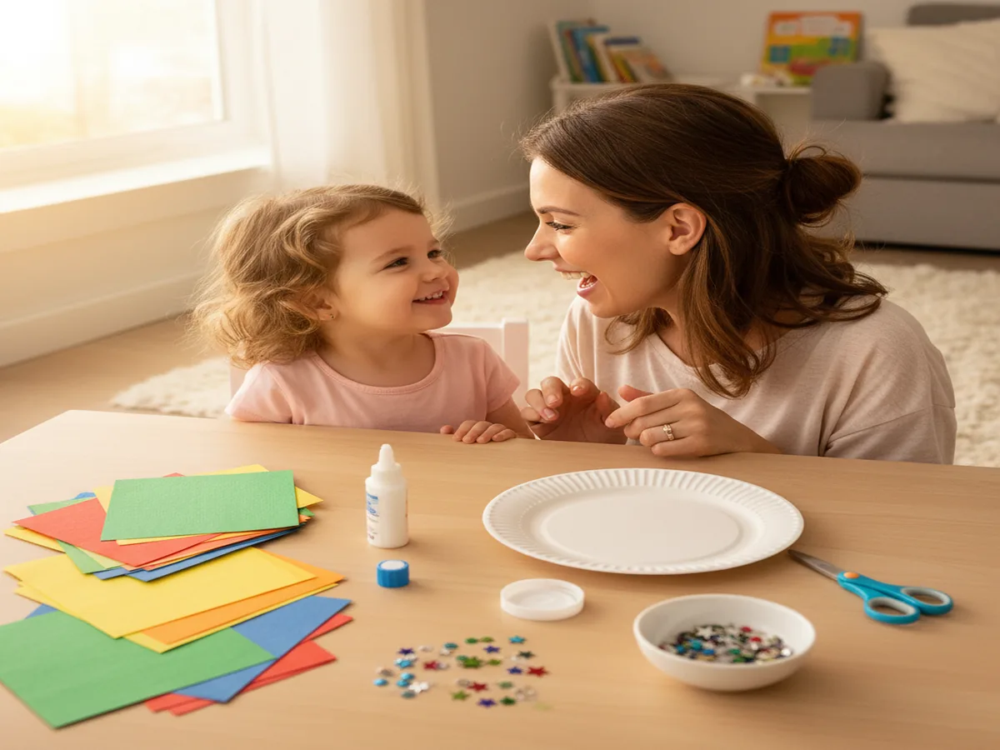
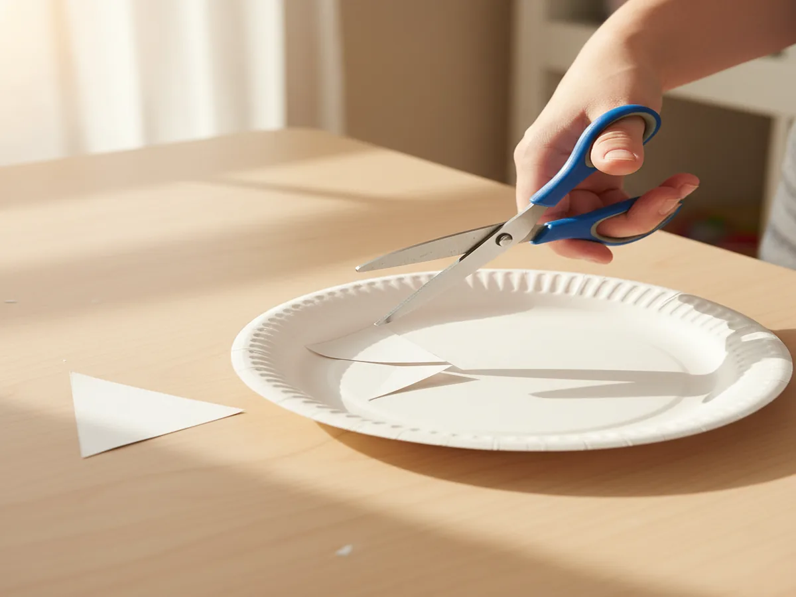
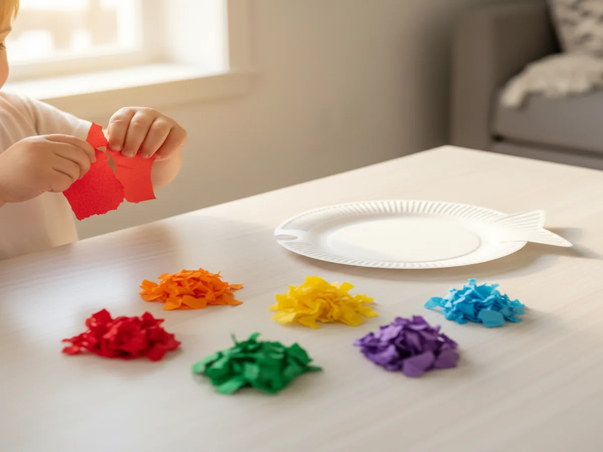
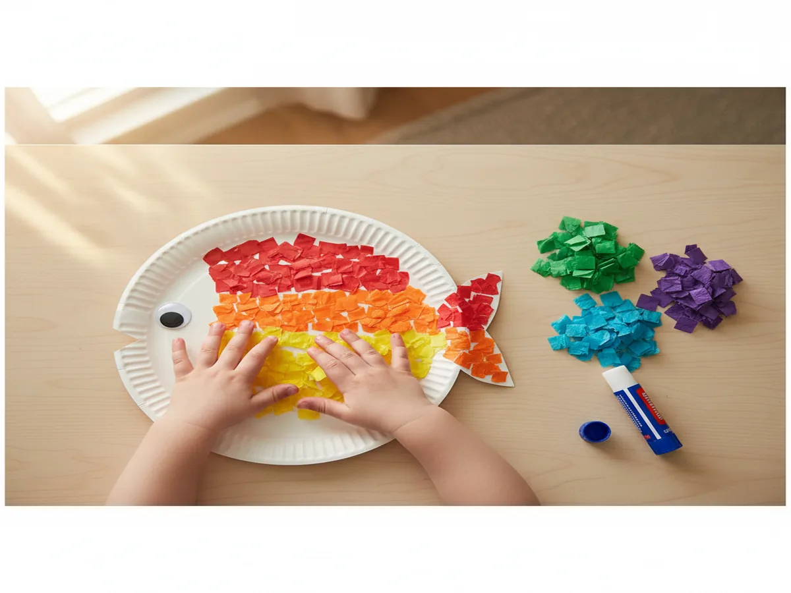
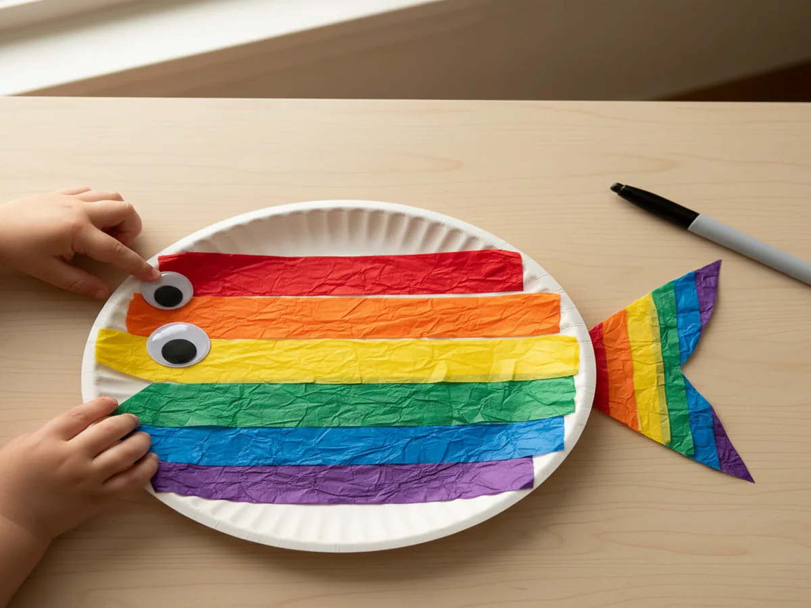
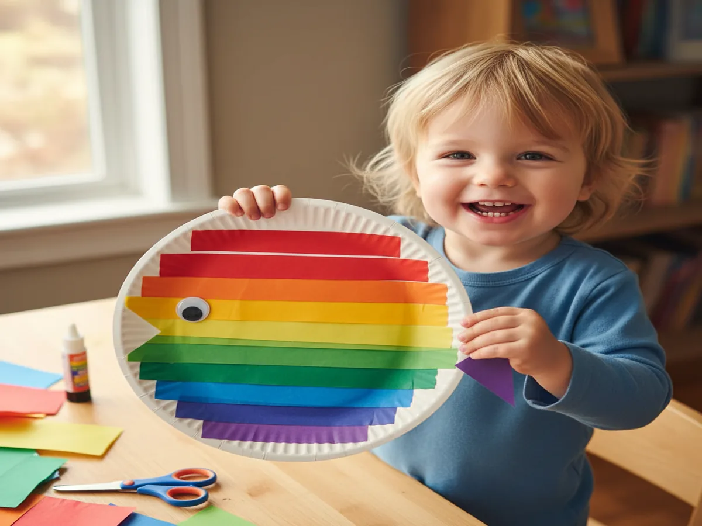

If your little one loves bright colors and fishy fun, you're going to adore this craft! This easy paper plate rainbow fish craft for toddlers is one of our all-time favorites. It's simple enough for tiny hands, gorgeous enough to hang on the fridge, and it comes together in about 15 minutes. Grab a paper plate, some colorful supplies, and let's make something magical together!
Why Kids Love This Craft
There's something about fish that absolutely captivates toddlers and preschoolers. Maybe it's the shimmer, the scales, or the way they swoosh through the water. This easy rainbow fish art project for toddlers taps into that excitement by letting little ones layer on colorful tissue paper, creating their very own dazzling fish. The textures, the crinkly sounds, and the rainbow of colors make it a total sensory win.
Beyond the fun factor, this craft is packed with developmental goodness. Tearing and crumpling tissue paper strengthens fine motor muscles, gluing pieces builds hand-eye coordination, and choosing colors is creative decision-making in action! Whether your child is 2 or 5, they'll feel so proud holding up their finished rainbow fish.

What You'll Need
Round up these supplies before you dive in. They're all easy to find and most are craft-stash staples!
- White paper plate, standard size works great, but small plates are perfect for little hands too.
- Tissue paper in rainbow colors (red, orange, yellow, green, blue, purple) for the scales.
- White school glue or a glue stick to adhere the tissue paper.
- Child-safe scissors for shaping the plate.
- Googly eye, one per fish (or draw one with a marker).
- Markers or crayons for adding fins and details.
- Optional: glitter glue or metallic/holographic paper for a special "rainbow scale."
- Optional: a small piece of cardstock for a sturdier tail fin.
Step-by-Step Instructions
Step 1: Prep Your Paper Plate Fish Shape
Start by cutting a triangular wedge out of one side of the paper plate to create the fish's mouth. Don't toss that triangle — flip it around and glue it to the opposite side to make the tail fin! (If you prefer a sturdier tail, cut one from cardstock instead.) If your toddler is on the younger side, handle this step yourself. For preschoolers comfortable with safety scissors, let them give it a try with your guidance.

Step 2: Cut or Tear the Tissue Paper
Here's where the fun really begins! Take your rainbow-colored tissue paper and either cut it into small squares (about 1–2 inches) or let your toddler tear it into pieces. Tearing tissue paper is seriously satisfying for little ones and it's amazing fine motor practice. Don't worry about perfect shapes at all — crinkly, jagged pieces are exactly what we want. Set out a few small piles of each color so your child can easily grab what they need.

Step 3: Glue the Tissue Paper "Scales"
Now it's time to turn that plain paper plate into a stunning rainbow fish! Have your child spread glue onto a section of the plate and press tissue paper pieces onto it. Guide them to create rainbow rows (red at the top, then orange, yellow, green, blue, purple) or just let them go free-form — both look amazing! For preschoolers, try showing them how to scrunch each square around a pencil eraser before gluing for a cool 3D texture effect.

Step 4: Add the Eye and Details
Once your fish is covered in gorgeous, colorful tissue paper, give it some personality! Glue a googly eye near the mouth opening. If you don't have googly eyes, just draw a circle with a black marker and add a little white dot for shine. You can also use a marker to draw a smile, add fin lines, or outline the mouth. For an extra-special touch, cut a small heart from holographic or metallic paper and glue it on as the "special shiny scale" — kids absolutely light up with this detail!

Step 5: Let It Dry and Show It Off
Set your beautiful rainbow fish somewhere flat to dry for about 10–15 minutes. Once dry, it's time for the best part: showing it off! Tape it to the fridge, hang it on a bulletin board, or attach a piece of yarn to the back and hang it from the ceiling for an adorable "underwater" display. If you made several fish with siblings or a playgroup, create a whole ocean scene on blue poster board.

Variations to Try
Painted Rainbow Fish: If tissue paper isn't your thing, try this version instead! Let your child paint the paper plate with watercolors or tempera paint in rainbow stripes, then add the eye and details once it dries. This is a wonderful simple paper plate fish craft for kids who love getting messy with a paintbrush. You'll get the same gorgeous rainbow effect with a totally different process.
Collage-Style Fish: Raid your recycling bin and scrap drawer! Use fabric scraps, cupcake liners, sticker dots, sequins, or even pieces of aluminum foil to create the fish's scales. This mixed-media approach is fantastic for older toddlers and preschoolers who love variety. Every fish turns out completely unique, which makes it extra special.
Ocean Scene Extension: Turn your easy paper plate rainbow fish craft for toddlers into a full art project! Glue the finished fish onto a large sheet of blue construction paper, then add green tissue paper seaweed, cotton ball bubbles, and maybe even a few shell stickers. It makes for an impressive display and extends the creative fun for kids who just don't want to stop crafting.
More Crafts You'll Love
If your little one had a blast with this paper plate rainbow fish craft for preschoolers, they'll love these projects too!
- Easy Paper Plate Jellyfish Craft for Toddlers: another adorable ocean animal craft with ribbons and streamers that's perfect for little hands!
- Simple Tissue Paper Butterfly Craft for Preschoolers: uses the same tissue paper technique with a totally different (and equally gorgeous) result.
Final Thoughts
This easy paper plate rainbow fish craft for toddlers is one of those projects that checks every box: it's affordable, quick, age-appropriate, and absolutely beautiful when it's done. Whether you're crafting with a curious 2-year-old or an enthusiastic 5-year-old, this fish is guaranteed to bring smiles and spark creativity. I love that it's adaptable for so many ages and skill levels, and it pairs perfectly with a read-aloud of The Rainbow Fish for a complete activity. So snap a photo of your little one's masterpiece and share it on Pinterest so other moms can discover this craft too! Tag us and use #CraftWithMommy. We'd love to see your colorful creations swimming across our feed. Happy crafting, mama! 🐟🌈